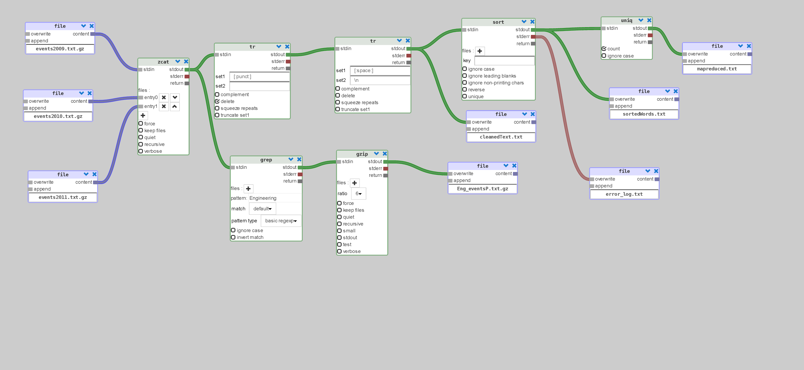
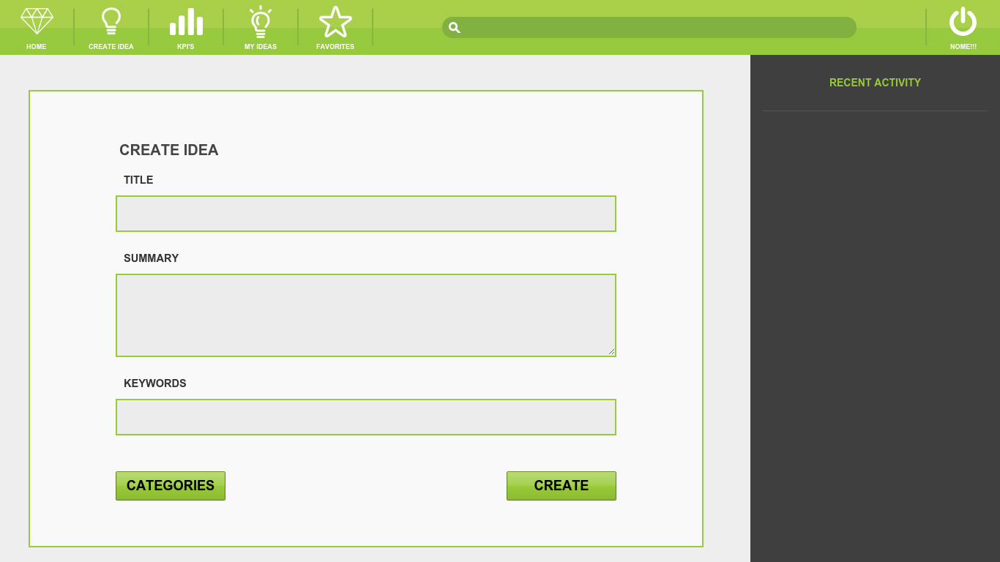

(Alpha state)
Demo
Shellhive
A collaborative realtime application to create big data tasks using UNIX tools. The processing workflow is formed by making typed connections, avoiding possible errors such as infinite loops by creating cycles in the dataflow. The workflow can be created or managed using the dataflow GUI, or using text code that should be compatible with UNIX Shell. The application can be used to study about the potential usage of the command line interface because it is secure enough to prevent the execution of unwanted code, and that the working environment is isolated thanks to Docker.(Alpha state)
Demo

Paragon
A mobile application which main objective is the promotion of innovation in terms of technologies, products, services, markets, processes and organizations. It was developed jointly with Altran Portugal. The platform is used as a support tool for generating, capturing and selecting ideas to aid the development of a project. Paragon is developed for Android and iOS environments in order to be accessible via mobile platforms and tablets. The main features of the platform are the development process of the idea and the access to a dashboard with key KPIs that enable to boost the innovation development phase of the project.
Cat and Mouse
A robotic game project based on the CiberRato Robot Simulation Environment, which simulates the movement of robots inside a labyrinth. There are 2 types of robots: cats and mice, the cats objective is to catch the mouse for this is to avoid getting caught in the labyrinth. The game can also be played using a device with a gyroscpe and internet connection as a controller to control a robot.
AR Fruit Samurai
A game based on augmented reality where you cut virtual fruits thatcomes from a virtual basket using a virtual sword, which in reality ismade of paper. Unfortunately, to enjoy the game you need a high frame-rate camera, because you may pass a fruit without cutting it due to sheer swing speed and a low frame-rate camera, I tested with a smartphone camera.